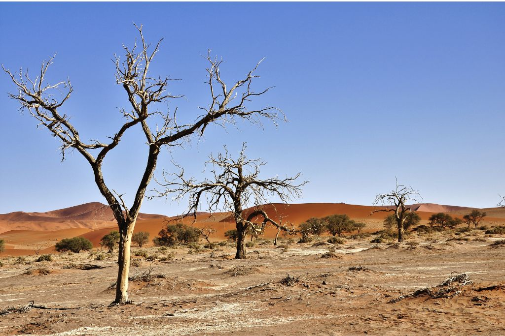
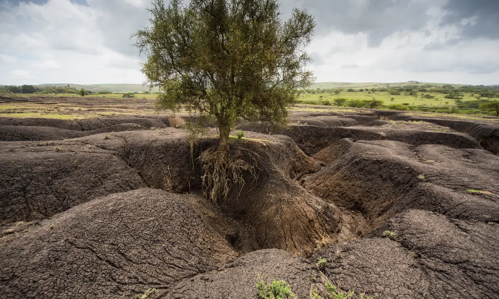
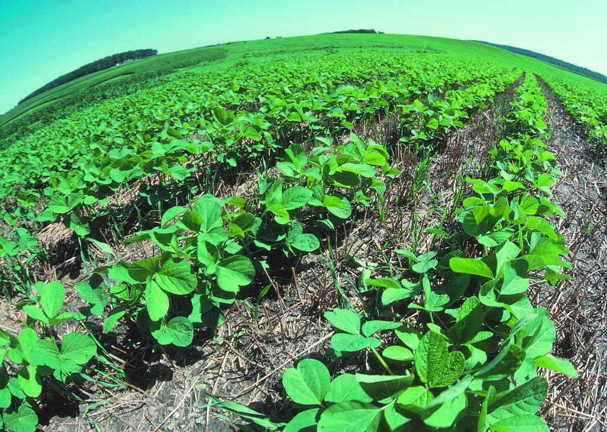
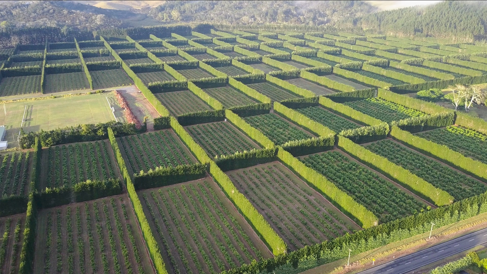

Harmful Effects of Soil Degradation
-
Soil degradation refers to the deterioration in the quality and health of soil due to various human activities and natural processes. It is a significant environmental problem that can have numerous harmful effects on ecosystems, agriculture, and human well-being. Some of the key harmful effects of soil degradation include:
-
DESERTIFICATION
 -
Desertification: Soil degradation can contribute to the expansion of arid and semi-arid regions, leading to desertification. Desertification makes it difficult for plant life to thrive, displaces local communities, and leads to the loss of biodiversity.
-
EROSION
 -
Erosion: Degraded soil is more susceptible to erosion by wind and water. This leads to the loss of topsoil, which contains essential nutrients and organic matter, further reducing the soil's productivity.
-
BIO DIVERSITY LOSS
-
Loss of biodiversity: Healthy soil supports a diverse range of plant and animal species. Soil degradation can disrupt this balance, leading to a decline in biodiversity and the loss of important ecosystem services.
Prevention Measures
-
Preventing soil degradation is essential for maintaining healthy ecosystems, sustainable agriculture, and preserving the environment. Here are some effective strategies to prevent soil degradation:
-
CONSERVATION TILLAGE
 -
Conservation tillage: Implement conservation tillage practices, such as no-till or reduced tillage, to minimize soil disturbance. These methods help retain organic matter, reduce erosion, and preserve soil structure and nutrients.
-
CROP ROTATION

-
Crop rotation and diversification: Practice crop rotation and grow a diverse range of crops in a particular area. Different plants have different nutrient requirements, and rotating crops helps maintain soil fertility and reduces the risk of nutrient depletion.
-
WIND BREAKS
 -
Windbreaks: Plant windbreaks of trees or shrubs to protect soil from wind erosion, especially in open and exposed areas.